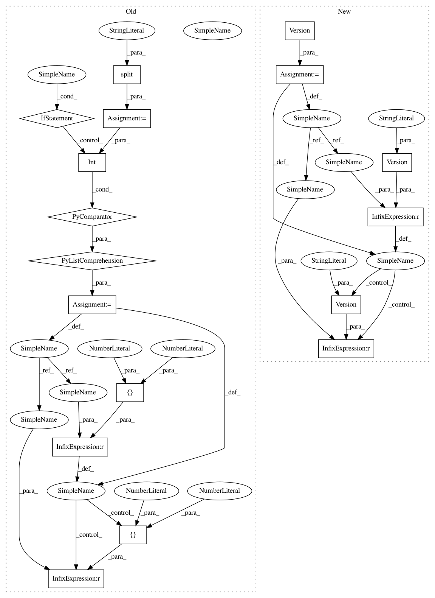

c24e0b567e29bd0f3a7eb5175904c4aa334581b7,tests/conftest.py,,tf_full_py_version,#Any#,312
Before Change
TODO: Evaluate use of --tf-full-version with possible eye to remove and simplify code.
version = [int(val) for val in tf_full_version.split(".")]
if version < [1, 11]:
return "py2"
if version < [2, 2]:
return "py3"
return "py37"
After Change
Fixture exists as such, since TF training and TFS have different latest versions.
Otherwise, this would simply be py37 to match the latest version support.
version = Version(tf_full_version)
if version < Version("1.11"):
return "py2"
if version < Version("2.2"):
return "py3"
return "py37"
In pattern: SUPERPATTERN
Frequency: 3
Non-data size: 17
Instances
Project Name: aws/sagemaker-python-sdk
Commit Name: c24e0b567e29bd0f3a7eb5175904c4aa334581b7
Time: 2020-06-25
Author: 6631887+laurenyu@users.noreply.github.com
File Name: tests/conftest.py
Class Name:
Method Name: tf_full_py_version
Project Name: aws/sagemaker-python-sdk
Commit Name: 0e4c0fa892f2e895625c12b6d8fbca03de19c11b
Time: 2020-07-13
Author: 6631887+laurenyu@users.noreply.github.com
File Name: src/sagemaker/cli/compatibility/v2/modifiers/framework_version.py
Class Name:
Method Name: _tf_py_version_default
Project Name: aws/sagemaker-python-sdk
Commit Name: c24e0b567e29bd0f3a7eb5175904c4aa334581b7
Time: 2020-06-25
Author: 6631887+laurenyu@users.noreply.github.com
File Name: tests/conftest.py
Class Name:
Method Name: tf_full_py_version
Project Name: aws/sagemaker-python-sdk
Commit Name: 413d05a220331196f5e98eb09e034d55e68cae6b
Time: 2020-07-14
Author: 6631887+laurenyu@users.noreply.github.com
File Name: tests/conftest.py
Class Name:
Method Name: tf_py_version